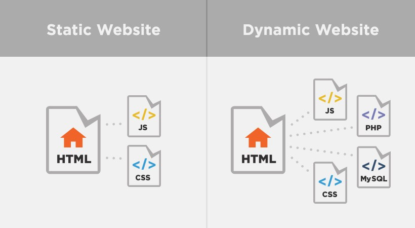

Web dizajn i izrada sajtova - osnovni pojmovi
Šta je web sajt?
Web sajt je zbirka povezanih veb stranica, obično identifikovana zajedničkim nazivom domena, i objavljena na barem jednom web serveru. Web stranica obično je dostupna preko javne mreže poput interneta ili preko privatne lokalne mreže (LAN), i poziva se na jedinstveni lokator - URL koji identifikuje web stranicu.
Web sajt može biti lična veb stranica, komercijalna - kompanijska veb prezentacija, web stranica vlade ili neprofitne organizacije. Veb lokacije su po pravilu posvećene određenoj temi ili svrsi, od kupovine raznovrsnih artikala do pružanja informacija. Sve javno dostupne web stranice zbirno predstavljaju World Wide Web (WWW), dok privatne web stranice, kao što je interni web sajt kompanije, najčešće predstavljaju deo intranet mreže.
Web stranice, koje su "gradivno tkivo" web lokacija, su dokumenti, obično sastavljeni u jednostavnom tekstu uparenom sa HTML. Web stranicama se pristupa preko HTTP-a, koji opciono može da koristi šifriranje (HTTP Secure, HTTPS) kako bi obezbedio sigurnost i privatnost za korisnika. Korisnička aplikacija - često veb pretraživač, prikazuje sadržaj web sajta prema uputstvima za označavanje HTML-a.
Početna stranica uglavnom sadrži direktorijum web sajta. Neki web sajtovi zahtevaju registraciju korisnika ili pretplatu na sadržaj za pristup. Primeri pretplatnih sajtova uključuju mnoge poslovne sajtove, web stranice vesti, web stranice akademskih časopisa, sajtove za igre, web lokacije za razmenu fajlova (datoteka), oglasne table, elektronsku poštu, web stranice za društvene mreže, stranice koje obezbeđuju podatke o berzama u realnom vremenu.
Korisnici mogu pristupiti veb sajtovima na nizu uređaja, uključujući desktop i laptop računare, tablet računare, pametne telefone i pametne televizore.
Šta je web dizajn?

Web dizajn obuhvata mnoge različite veštine i discipline u proizvodnji i održavanju veb sajtova.
Različite oblasti web dizajna uključuju grafički dizajn, dizajn interfejsa, autorstvo, uključujući standardizovani kod i vlasnički softver, dizajn korisničkog iskustva i optimizaciju pretraživača. Izraz "web dizajn" obično se koristi da opiše proces koji se odnosi na dizajn - izradu web sajta na klijentskoj strani.
Statički i dinamički sajtovi
Statički sajt
Statički web sajt čuva jedinstvenu datoteku za svaku stranicu statičkog sajta. Svaki put kada se traži određena web stranica, isti sadržaj se vraća. Ovaj sadržaj se kreira jednom, i to prilikom dizajna web sajta.
Prednosti izrade statičkog sajta su da su jednostavniji za hostovanje, jer je njihov server potreban samo za pružanje statičkog sadržaja, a ne i za izvršavanje serverske skripte. Ovo zahteva manje poslova vezanih za administraciju servera i manje su šanse da budu izložene sigurnosne rupe. Takođe je brže serviranje web stranica na slabijem serverskom hardveru. Ova prednost postala je manje važna u današnje vreme, pošto je jeftini web hosting proširen tako da nudi dinamičke karakteristike, a virtuelni serveri nude visoke performanse uz niske troškove.
Gotovo svi web sajtovi imaju neki statički sadržaj, jer su npr. slike i stilovi obično statični, pa čak i na web sajtu izrađenom sa vrlo dinamičnim stranicama.
Dinamički sajt
Dinamički web sajtovi se generišu u "letu" i koriste serversku tehnologiju za generisanje web stranica. Oni najčešće preuzimaju sadržaj iz baze podataka.
Proces dizajniranja web sajta dinamičkog tipa je sveobuhvatniji i komplikovaniji od izrade statičkog sajta. Skup znanja neophodnih za razvoj dinamičkih web sajtova je mnogo širi nego za statičke web stranice i uključuje programiranje na serveru i komunikaciju sa bazom podataka, kao i dizajn interfejsa na strani klijenta. Čak i dinamički projekti srednjeg obima su skoro uvek timski napori.